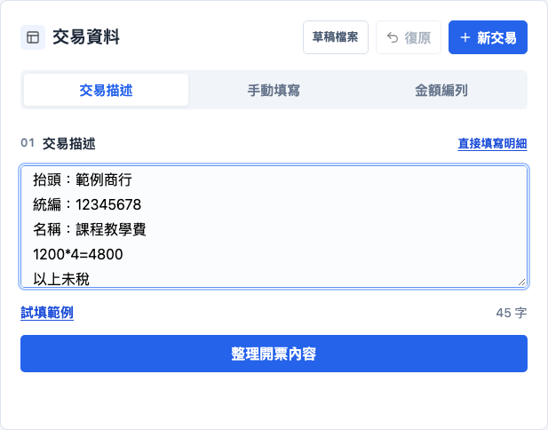
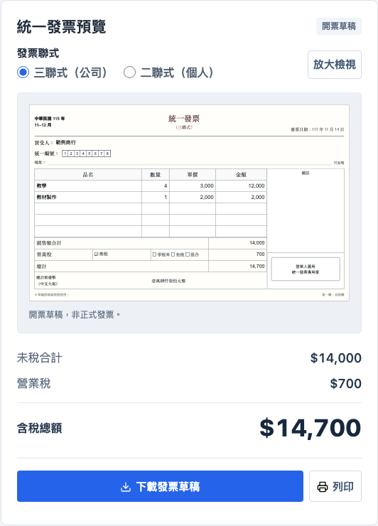

開始前先看這裡
使用說明
填寫交易資料，確認品項與價格，再核對發票草稿。查看說明不會改動工作台資料；關閉說明視窗後，就能繼續原本的交易。
工作台產出的是填寫輔助草稿，不是正式發票。圖片中的買受人、統編與金額均為範例。
01
用交易描述帶入資料
適合手上已有一段交易文字時使用。
- 在編輯區選擇「交易描述」。
- 填入抬頭、統編、品名，以及單價與數量；已知含稅或未稅時，一起寫明。
- 點「整理開票內容」，再核對下方帶入的買受人與明細。
可參考這種寫法
抬頭：範例商行 統編：12345678 名稱：課程教學費 1200*4=4800 以上未稅
算式預設依「單價 × 數量」判讀。範例為單價 1,200 元、數量 4。文字整理採目前支援的辨識規則，並非任意文字都能正確理解；整理後仍需核對。
若出現「未辨識到完整品名與金額」，補上品名、金額或算式，再重新整理；也可以切到「手動填寫」修正。尚未成功整理的描述，會阻止直接下載舊資料。

02
手動填寫與核對買受人
適合直接輸入，或修正已整理的資料。
03
確認未稅或含稅，選錯也能修改
這裡是在確認「輸入的單價」是否已包含營業稅。
- 填完品項後，若單價類型待確認，會在品項明細下方顯示問題。
- 選擇「未稅」或「含稅」，再點「確認單價類型」。
- 選錯時，在同一位置展開「修改含稅／未稅」，選擇新類型，再點「套用全部品項」。
以金額 4,800 元、稅率設定 5% 為例
- 輸入的是未稅金額
- 4,800 + 240 = 5,040 元
- 輸入的是含稅金額
- 含稅總額仍為 4,800 元
這是計算操作範例，不是交易稅別建議。「含稅／未稅」和「應稅／零稅率／免稅」是不同設定，請依實際交易核對。
同一張草稿若各筆單價類型不同，請改用逐筆設定，不要套用全部品項。尚有價格待確認時，預覽仍可看，但下載會要求先完成確認。
04
產生並選用金額編列版本
入口在編輯區的「金額編列」分頁，功能仍保留。
05
核對票面，再下載或列印
空白格式一開始就能預覽，不必先填完。
- 桌機可在右側看即時預覽；手機點「核對預覽」，再用「返回修改」回到編輯位置。
- 在預覽上方選擇二聯式／三聯式。需要看清楚時使用「放大檢視」：桌機會開啟原始尺寸的票面視窗；手機則放大原票面，可左右捲動。
- 核對買受人、統編、日期、品名、數量、單價，以及未稅、稅額、含稅總額。
- 點「下載發票草稿」取得 PNG；需要紙本草稿時使用「列印」。
紙本常見為 5 列品項。超過 5 列時，預覽會展開顯示全部資料並提醒核對；請先確認如何分張或合併，不要直接照超出的版面填寫紙本。
若下載被擋住，頁面會帶你回到待確認欄位。已送出下載但沒有看到檔案時，檢查瀏覽器下載紀錄，或使用出現的「另存發票 PNG」連結。
PNG 是圖片，不能當成可繼續編輯的備份；需要日後修改，請另外匯出草稿 JSON。

06
備份、復原與開始下一筆
草稿檔負責保留資料，圖片負責查看與列印。